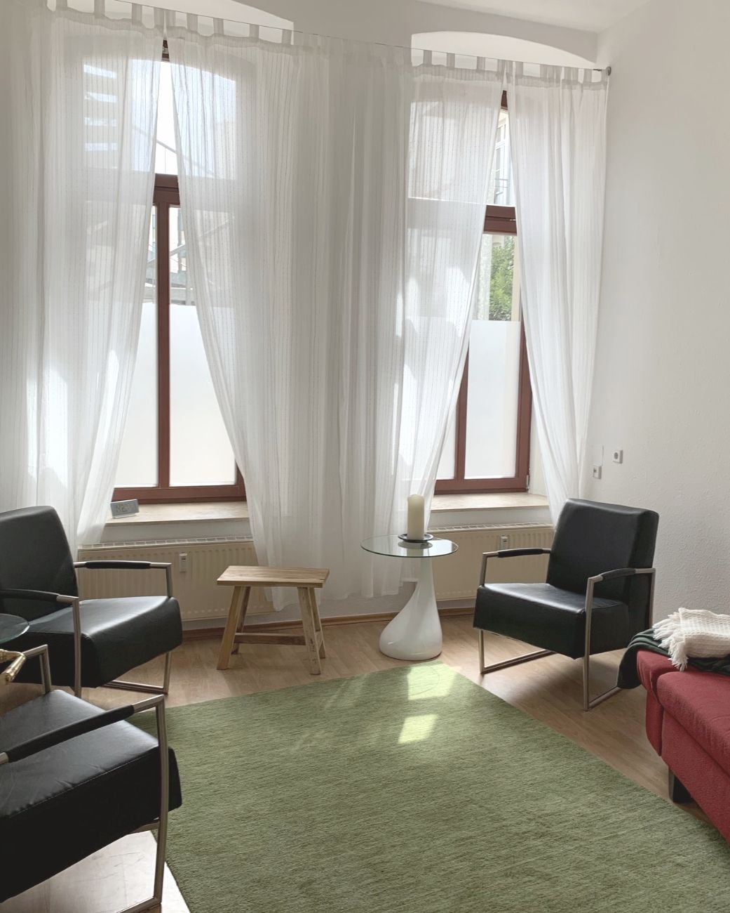

Praxis & Kontakt
Rufen Sie an, schreiben Sie mir oder buchen Sie online. Das Erstgespräch ist kostenlos.
Die Praxis
Die Praxis liegt in der Nähe des Hauptbahnhofs und ist mit öffentlichen Verkehrsmitteln sehr gut zu erreichen.



Adresse
Gilbert Josef Then
Querstraße 29
04103 Leipzig
Anfahrt
Wenige Minuten zu Fuß vom Hauptbahnhof.
Auf der Karte ansehen
Barrierefreiheit
Etage, Aufzug, Klingel
In einer akuten Krise
Wenn es Ihnen gerade sehr schlecht geht und Sie sofort jemanden brauchen: Die Telefonseelsorge ist rund um die Uhr kostenlos erreichbar unter 0800 111 0 111. In einem Notfall wählen Sie bitte 112.